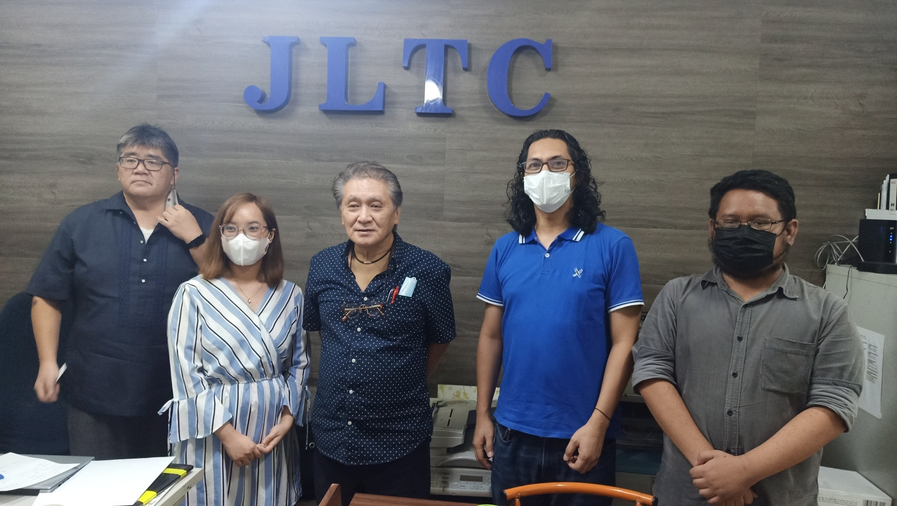

JLTC is now 18 years. JLTC began 18 years ago February 26, 2004 at the heart of Metro Manila. Now, JLTC has become one of the leading provider of foreign language training, international exam review , college entrance examination test training and review, home-based academic tutorials, foreign language interpretation services, foreign language translation services, and advertising and print business services.
JLTC regularly offers foreign languages, foreign language translation, foreign language interpretation, academic subjects tutorial, review , and call center training on demand.
At present, there are 8 full time employees and 37 full-time /part-time lecturers.
